Wie Sie mit der App im Unterricht arbeiten, mit den Lernzielen zu jeder Möglichkeit
Mittelstufe · 3. bis 6. Klasse · Zyklus 2 Oberstufe · 7. bis 9. Klasse · Zyklus 3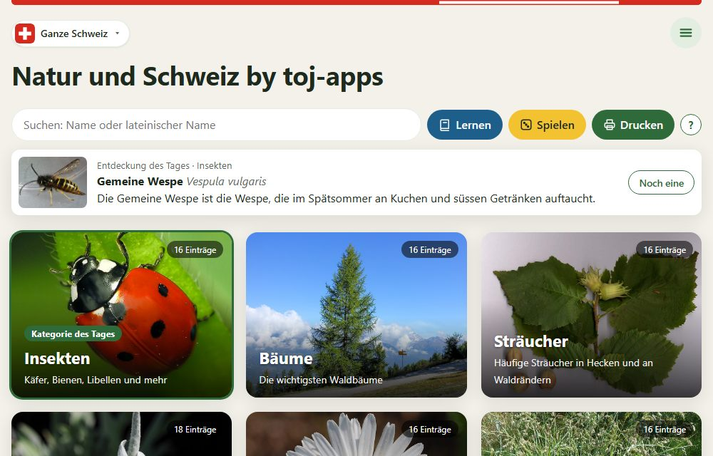
Natur und Schweiz ist eine Lern- und Nachschlageseite über Pflanzen, Tiere, Landschaften, Geschichte und Politik der Schweiz. Jeder Eintrag hat bis zu vier Bilder und einen Steckbrief. Darum herum gibt es Werkzeuge zum Lernen, Spielen, Entdecken und für den Unterricht mit der ganzen Klasse.
Der Lernstand bleibt auf dem Gerät. LernApp, gelöste Forscheraufträge, Spielrekorde und Abzeichen werden nur im Browser des Geräts gespeichert, nicht auf einem Server. Das schützt die Daten der Lernenden, hat aber Folgen:
Die App folgt einem einfachen Weg, den auch die Einführung beim ersten Besuch zeigt:
| Schritt | Was die Lernenden tun | Womit |
|---|---|---|
| 1 Ansehen | Eine Kategorie öffnen, Karten durchblättern, Steckbriefe lesen, Stimmen anhören | Karten, Suche |
| 2 Lernen | Namen zu Bildern lernen, jeden Tag ein paar Minuten | LernApp |
| 3 Spielen | Dasselbe Wissen spielerisch üben und kontrollieren | Memory, Duell, Detektiv |
| 4 Anwenden | Fragen aus dem Alltag beantworten, Zusammenhänge erkennen | Forscheraufträge, Themenpfade |
Dazu kommen Werkzeuge für die ganze Klasse: das Quiz am Beamer, die Abstimmung, gedruckte Arbeitsblätter und Memorys. Die Farben in der App helfen bei der Orientierung: Lernen ist Petrolblau, Spielen Sonnengelb, alles andere Grün. Das Lernziel steht in jeder Kategorie oben in einem hellgrünen Feld.
Oben rechts öffnet sich das Menü mit vier Gruppen: Lernen (LernApp, Forscheraufträge, Abzeichen), Spielen (Spiele), Entdecken (Jahreskalender, Themenpfade, Zeitstrahl, Kantone vergleichen) und Für den Unterricht (Quiz, Abstimmung spielen, PDF drucken). Darunter klein: Hilfe, Einstellungen, Admin und Copyright. Neben dem Suchfeld führen drei Knöpfe direkt zu Lernen, Spielen und Drucken.
Jede Kategorie zeigt ihre Einträge als Karten. Eine Karte hat bis zu vier Bilder (z. B. beim Baum: Wuchs, Blatt, Frucht, Rinde) und als letzte Seite den Text. Ein Tipp öffnet die Karte gross, Bilder lassen sich vergrössern.
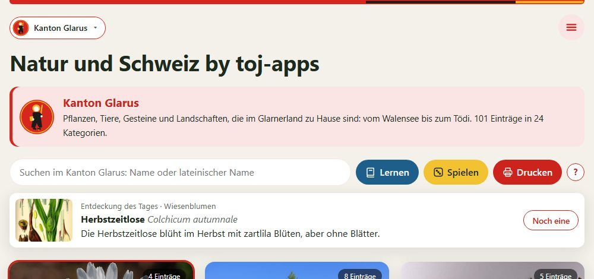
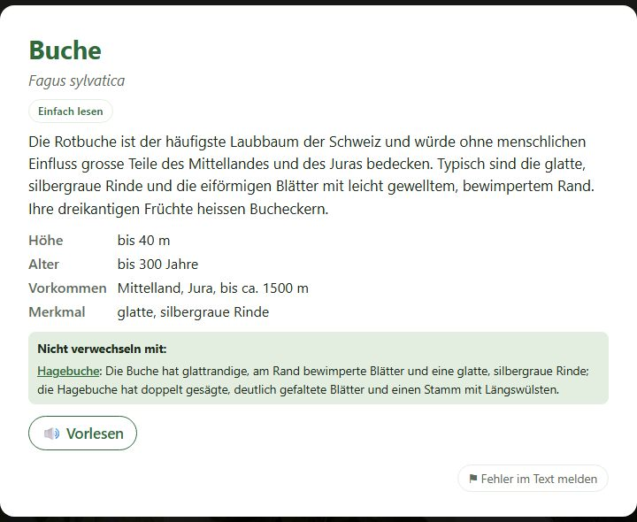
Tipp Mittelstufe: Schalten Sie für schwächere Lesende und Kinder mit Deutsch als Zweitsprache «Einfach lesen» ein und lassen Sie die Texte vorlesen. Die Kinder können so selbstständig nachschlagen.
Tipp Oberstufe: Die Verwechslungshinweise eignen sich für Bestimmungsübungen: Lernende formulieren selbst ein Merkmal, an dem man zwei Arten sicher unterscheidet, und prüfen es danach am Hinweis in der App.
Die Schülerinnen und Schüler können …
Lehrplan 21: NMG.2 (Tiere, Pflanzen und Lebensräume), NMG.1 (Gesundheit: Giftpflanzen, Pilze), D.2 (Lesen), MI.1 (Medien)
Die Schülerinnen und Schüler können …
Lehrplan 21: NT.9 (Ökosysteme erkunden), NT.1 (Naturwissenschaften verstehen), MI.1 (Medien)
Die LernApp zeigt die Bilder eines Eintrags, die Lernenden nennen den Namen. Wiederholt wird nach dem Leitner-System mit 5 Fächern: Was man richtig weiss, kommt nach 1, 3, 7 und 30 Tagen wieder, was man nicht weiss, bald nochmals.
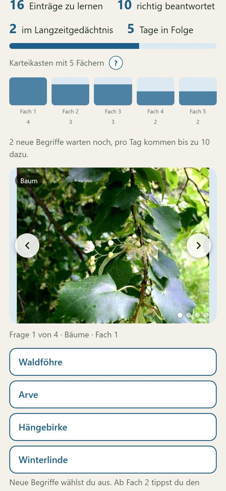
Tipp Mittelstufe: Beim Anlegen der Session «Leicht» ankreuzen: Die Kinder wählen dann immer aus 4 Namen und müssen keine schwierigen Namen wie «Gemeine Pestwurz» schreiben. Eine oder zwei Kategorien pro Session genügen. Fester Platz im Wochenplan: «Jeden Tag eine LernApp-Runde».
Tipp Oberstufe: Vor einer Lernkontrolle eine Session nur mit den geprüften Kategorien anlegen lassen. Die Lernenden sehen selbst, was sie schon im Langzeitgedächtnis haben (Fach 5). Gut für selbstorganisiertes Lernen: Ziel setzen («bis Freitag alle Vögel in Fach 3»), Fortschritt am Ring prüfen.
Die Schülerinnen und Schüler können …
Lehrplan 21: NMG.2 (Vielfalt der Lebewesen wahrnehmen und ordnen); überfachlich: Selbstständigkeit, Lernen lernen
Die Schülerinnen und Schüler können …
Lehrplan 21: NT.9 (Ökosysteme: Arten kennen); überfachlich: Selbstreflexion, Selbstständigkeit, Lernstrategien
54 Aufträge in vier Arten, die Antwort steht immer in den Karten einer Kategorie:
Ablauf: Frage lesen → Vermutung notieren → «Nachforschen» führt in die passende Kategorie → antworten (auswählen, Wort oder Zahl, gern als Satz) → Erklärung und Vergleich mit der Vermutung. Ein Tipp hilft, wenn es nicht gleich stimmt. Unterbrechen ist jederzeit möglich, die angefangene Antwort bleibt gespeichert.
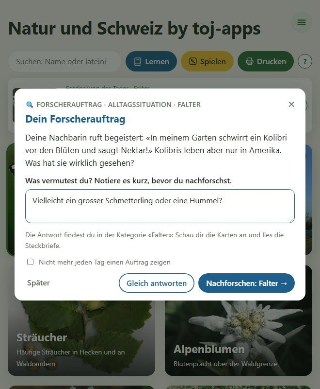
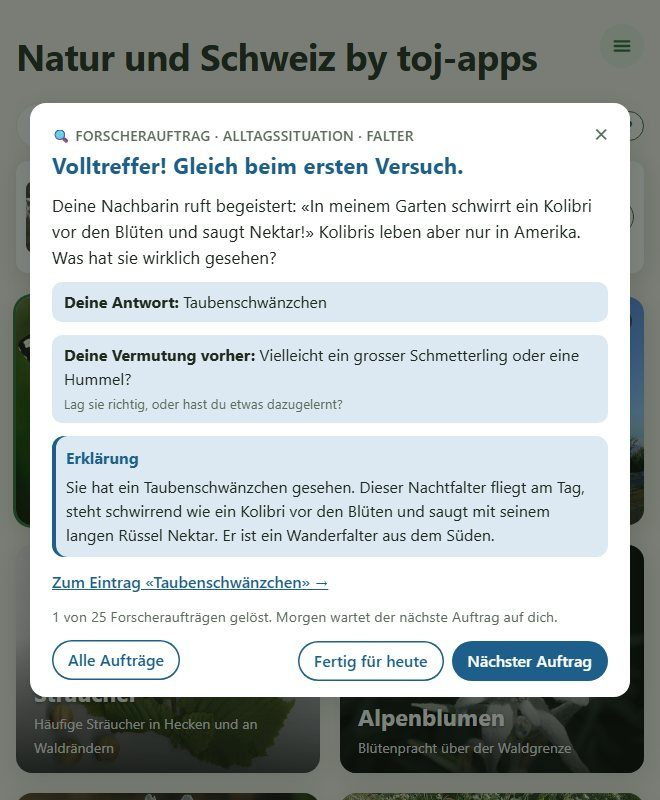
Tipp Mittelstufe: Den Auftrag des Tages gemeinsam am Beamer lesen, alle schreiben ihre Vermutung auf ein Kärtchen. Am Ende der Woche lösen Zweiergruppen je einen Auftrag und stellen ihn der Klasse vor. Die Rechenaufgaben passen gut in die Mathematik (Grössen, Masseinheiten).
Tipp Oberstufe: Die Forscherfragen eignen sich als schriftliche Kurzarbeit: Antwort in eigenen Worten, danach Selbsteinschätzung mit der Musterlösung («richtig», «teilweise», «noch nicht»). Lernende können eigene Aufträge nach dem gleichen Muster erfinden; die Lehrperson nimmt gute in der Verwaltung auf.
Die Schülerinnen und Schüler können …
Lehrplan 21: NMG.2, NMG.4 (Phänomene erforschen), MA.1 (Zahl und Variable), MA.3 (Grössen); überfachlich: Informationen nutzen
Die Schülerinnen und Schüler können …
Lehrplan 21: NT.1 (Naturwissenschaften verstehen), NT.9, RZG.1, MA.1 und MA.3; überfachlich: Informationen nutzen, Selbstreflexion
Drei Spiele üben dasselbe Wissen wie die LernApp auf andere Art. Am Schluss steht eine Rückmeldung mit Rekord und Durchschnitt und eine Liste der Karten, die man sich nochmals anschauen sollte. Die Spiele zählen nicht für den Lernstand.
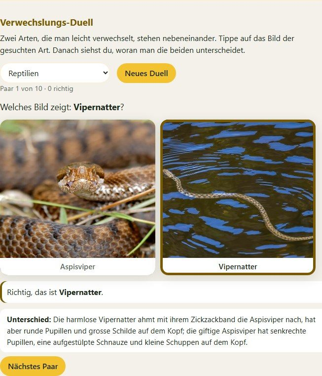
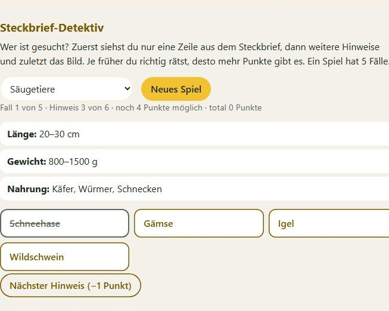
| Spiel | So geht es | Lernziel Mittelstufe | Lernziel Oberstufe |
|---|---|---|---|
| Memory | 8 Paare aus Bild und Name finden | Bild und Name einander zuordnen und sich die Arten einprägen | Arten rasch wiedererkennen, auch gemischt aus allen Kategorien |
| Verwechslungs-Duell | Zwei ähnliche Arten nebeneinander, die gesuchte antippen, danach den Unterschied lesen (bis 10 Paare) | zwei ähnliche Arten an einem sichtbaren Merkmal unterscheiden | Bestimmungsmerkmale vergleichen und den Unterschied in eigenen Worten begründen |
| Steckbrief-Detektiv | Erst eine Steckbrief-Zeile, dann weitere Hinweise, die Beschreibung und zuletzt das Bild; je früher richtig, desto mehr Punkte (5 Fälle) | aus mehreren Hinweisen schrittweise auf eine Art schliessen | aus Merkmalen logisch auf eine Art schliessen und entscheiden, wann die Hinweise genügen |
Tipp Mittelstufe: Steckbrief-Detektiv am Beamer mit der ganzen Klasse spielen: Nach jedem Hinweis stimmen alle per Handzeichen ab. Memory eignet sich als Belohnung nach der LernApp oder zu zweit am Tablet.
Tipp Oberstufe: Das Verwechslungs-Duell vor einer Exkursion spielen (Pilze, Giftpflanzen, Reptilien). Danach notieren die Lernenden die drei Paare, die sie am häufigsten verwechselt haben, mit dem Unterschied.
Lehrplan 21: NMG.2 (Vielfalt wahrnehmen, beschreiben, ordnen); überfachlich: Kooperation, mit Erfolg und Misserfolg umgehenNT.9 (Ökosysteme erkunden, Arten bestimmen); überfachlich: Ausdauer, Selbstreflexion
Ein Themenpfad führt Schritt für Schritt durch ein Thema, quer durch die Kategorien. Jeder Schritt ist eine Karte mit einer Frage zum Nachdenken; danach steht ein Häkchen. Am Schluss warten Forscheraufträge. Geschafft ist der Pfad, wenn alle Karten angesehen und alle Aufträge gelöst sind.
Heute gibt es den Pfad «Klimawandel in der Schweiz» mit 11 Karten und 6 Aufträgen: Hitzewelle, Aletsch-, Morteratsch- und Rhonegletscher, Glärnisch, Bachforelle, Äsche, Fichte, Buchdrucker, Starkregen und Schneehase. Weitere Pfade (Wald, Wasser, Glarnerland) sind geplant.
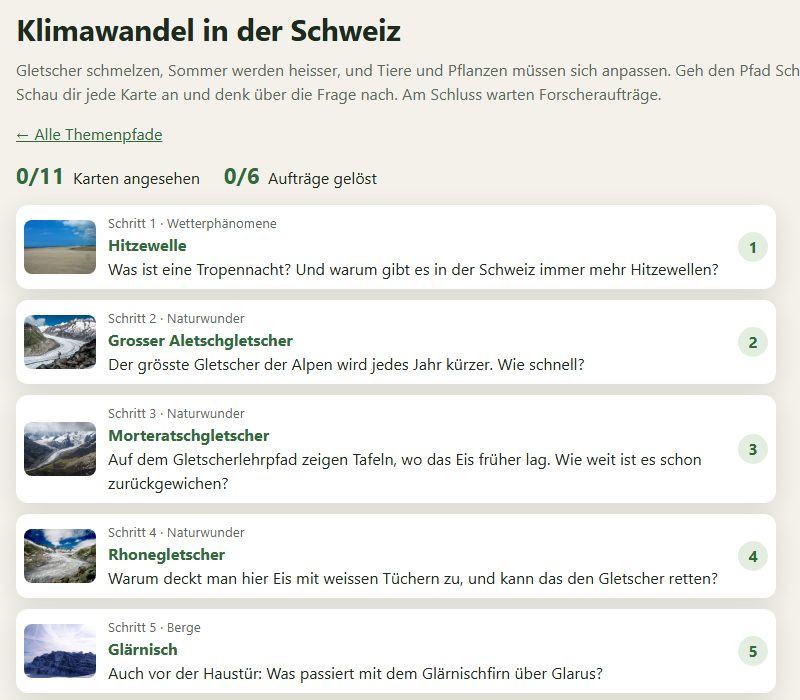
Tipp Mittelstufe: Den Pfad zu zweit gehen und zu jeder Frage einen Satz ins Heft schreiben. Der Schritt «Glärnisch» zeigt den Klimawandel vor der eigenen Haustür. Zum Abschluss ein Plakat: «Was der Klimawandel für Tiere und Pflanzen bedeutet».
Tipp Oberstufe: Den Pfad als Einstieg in eine Sequenz zu Klima und Klimawandel nutzen. Die Lernenden ordnen die Folgen in Kategorien (Gletscher, Gewässer, Wald, Tiere) und stellen Ursache-Wirkungs-Ketten auf, z. B. Trockenheit → geschwächte Fichten → Buchdrucker.
Die Schülerinnen und Schüler können …
Lehrplan 21: NMG.2 (Einflüsse des Menschen auf die Natur), NMG.4 (Wetter, Phänomene), NMG.8 (Räume)
Die Schülerinnen und Schüler können …
Lehrplan 21: NT.9 (Ökosysteme), RZG.1 (Wetter und Klima, natürliche Grundlagen), RZG.3 (Mensch-Umwelt-Beziehungen); BNE
Zeigt für jeden Monat Gedenktage, Termine und Bräuche (z. B. Fridolinstag, Näfelser Fahrt, Landsgemeinde) und was laut Steckbrief gerade blüht, fliegt, wächst oder laicht. Mit ‹ und › blättert man durch die Monate.
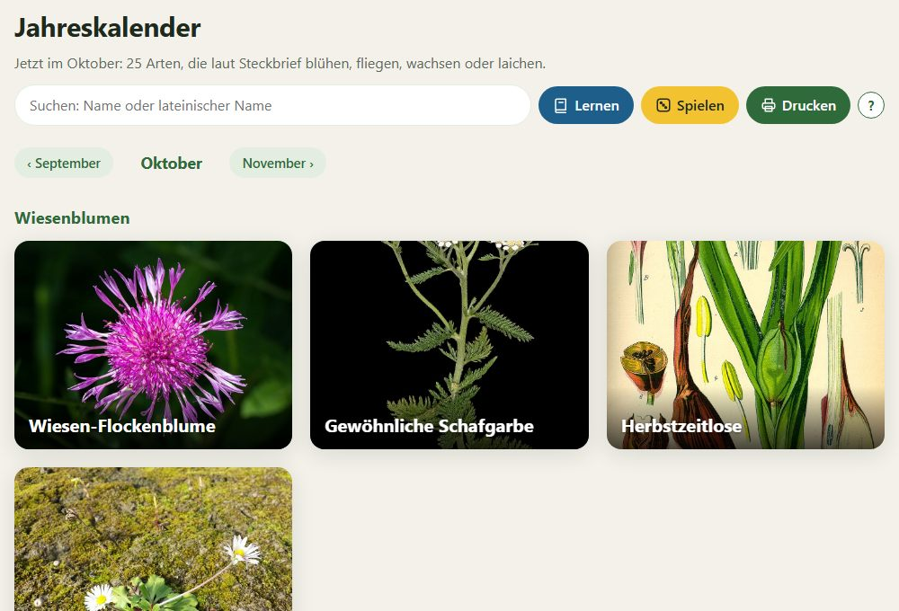
Die Schülerinnen und Schüler können …
Lehrplan 21: NMG.2, NMG.9 (Zeit, Dauer und Wandel)NT.9, RZG.5 (Schweiz in Tradition und Wandel)
Ordnet die Einträge aus Geschichte und Politik nach Jahr, vom Bundesbrief 1291 bis heute. Im Kanton erscheinen nur seine Ereignisse; in der ganzen Schweiz zeigt ein Kürzel (z. B. GL), zu welchem Kanton ein Ereignis gehört.
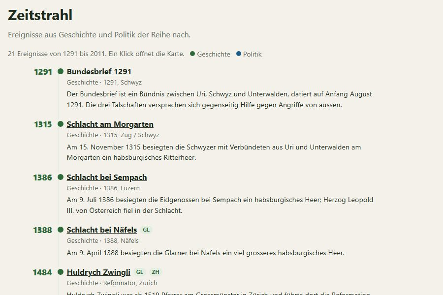
Tipp Mittelstufe: Fünf Ereignisse auswählen und auf einer Wäscheleine im Schulzimmer in die richtige Reihenfolge bringen. Die Schlacht bei Näfels 1388 gehört zur Geschichte des eigenen Kantons.
Tipp Oberstufe: Epochen bilden lassen (Alte Eidgenossenschaft, Reformation, Helvetik, Bundesstaat) und begründen, welche Ereignisse eine Wende bedeuteten.
Die Schülerinnen und Schüler können …
Lehrplan 21: NMG.9 (Zeit, Dauer und Wandel verstehen)RZG.5 (Schweiz in Tradition und Wandel), RZG.6 (Kontinuitäten und Umbrüche), RZG.7 (Geschichtskultur)
85 Orte (Berge, Seen, Naturwunder, Sehenswürdigkeiten, Orte aus Geschichte und Politik) als farbige Punkte auf der Landeskarte von swisstopo. Verschieben und zoomen wie bei einer Kartenapp, Kategorien oben ein- und ausblenden. Ein Tipp auf einen Punkt zeigt Bild und Name, «Karte ansehen» öffnet Bilder und Steckbrief. Wo bin ich? zeigt den eigenen Standort und sortiert die Orte nach Entfernung; der Standort bleibt auf dem Gerät. Im Kanton erscheinen nur seine Orte (Glarus: 23). Die Karte braucht Internet.
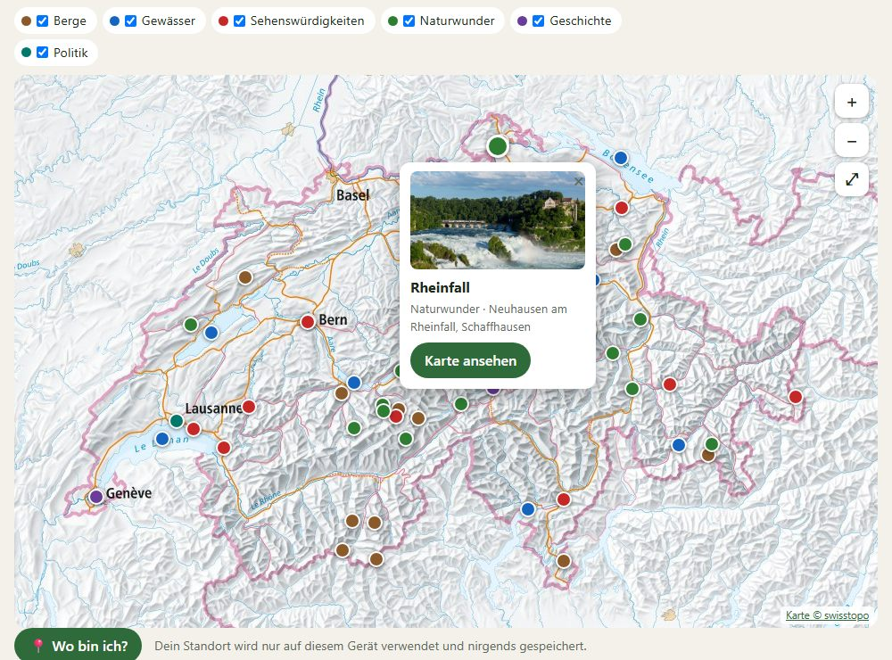
Tipp Mittelstufe: Am Beamer gemeinsam die Orte im Glarnerland suchen: Wo liegt der Klöntalersee, wo das Martinsloch? Danach zeigen die Kinder auf der Wandkarte, wo die Punkte liegen. Vor einem Ausflug mit «Wo bin ich?» schauen, was in der Nähe liegt.
Tipp Oberstufe: Eine Exkursion planen: Gruppen wählen drei Orte in der Nähe, schätzen Entfernung und Höhenunterschied auf der Landeskarte und begründen die Route. Mit gedruckten Steckbriefen und QR-Codes der Einträge (Verwaltung) entsteht daraus ein Postenlauf.
Die Schülerinnen und Schüler können …
Lehrplan 21: NMG.8 (Menschen nutzen Räume – sich orientieren), NMG.2RZG.4 (sich in Räumen orientieren), RZG.1, RZG.2
Oben links wählt man, ob die Seite die ganze Schweiz zeigt oder nur einen Kanton: Glarus, Graubünden, St. Gallen, Zürich oder Tessin. Im Kanton erscheinen nur die Einträge, die dort wichtig sind, in den Farben des Kantons. Alles funktioniert gleich: Suche, LernApp, Aufträge, Spiele, Quiz und Drucken nehmen dann nur diese Einträge. Auf der Textseite steht bei vielen Einträgen, was sie im Kanton besonders macht. Der Kanton Glarus hat 101 Einträge in 24 Kategorien.
Direkt einsteigen: je-net.ch/sff/glarus (oder /graubuenden, /st-gallen, /zuerich, /tessin) öffnet gleich den Kanton. Die Wahl bleibt auf dem Gerät gespeichert.
Kantone vergleichen zeigt pro Kategorie, was zwei Kantone gemeinsam haben und was nur einer kennt, z. B. welche Reptilien es im Tessin gibt, aber nicht in Glarus.
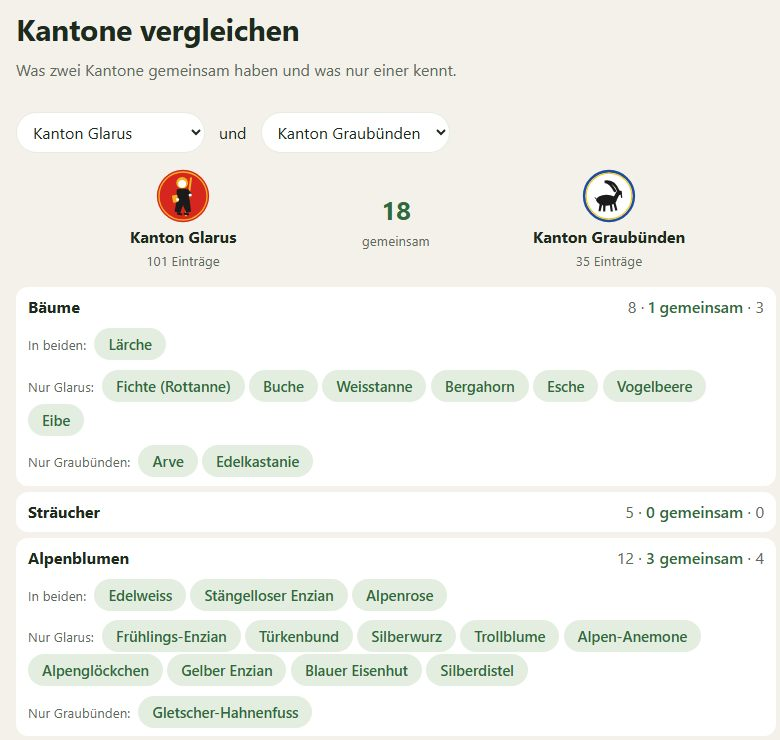
Tipp Mittelstufe: Für den Unterricht zum Kanton Glarus die Adresse je-net.ch/sff/glarus als QR-Code aufhängen. Die Kinder lernen so zuerst, was vor der Haustür lebt und steht. Später vergleichen sie mit einem Kanton, in dem sie schon in den Ferien waren.
Tipp Oberstufe: Gruppen untersuchen je einen Kanton und erklären die Unterschiede beim Vergleich mit Glarus: Höhenlage, Klima (Alpensüdseite), Gewässer, Geschichte. Ergebnis als kurze Präsentation.
Die Schülerinnen und Schüler können …
Lehrplan 21: NMG.8 (Menschen nutzen Räume, sich orientieren), NMG.2, NMG.9
Die Schülerinnen und Schüler können …
Lehrplan 21: RZG.1 (natürliche Grundlagen), RZG.2 (Lebensweisen und Lebensräume), RZG.4 (sich in Räumen orientieren), NT.9
Landsgemeinde: Wer hat das Mehr? Die Klasse wählt eine Frage (z. B. «Soll es auf dem Pausenplatz einen Trinkbrunnen geben?»). Auf «Hände hoch!» erscheinen viele Hände für Ja und Nein. Wie der Landammann an der Glarner Landsgemeinde schätzt die Klasse, welche Seite das Mehr hat; danach wird aufgelöst.
Volk und Stände: Für jeden Kanton lässt sich der Ja-Anteil einstellen. Die Seite rechnet Volksmehr und Ständemehr (23 Standesstimmen, sechs Kantone mit halber Stimme) und zeigt, wann eine Vorlage trotz Volks-Ja scheitert. Vorbereitete Beispiele: «Stadt sagt Ja, Land sagt Nein», «Zufall», «Überall 50 %».
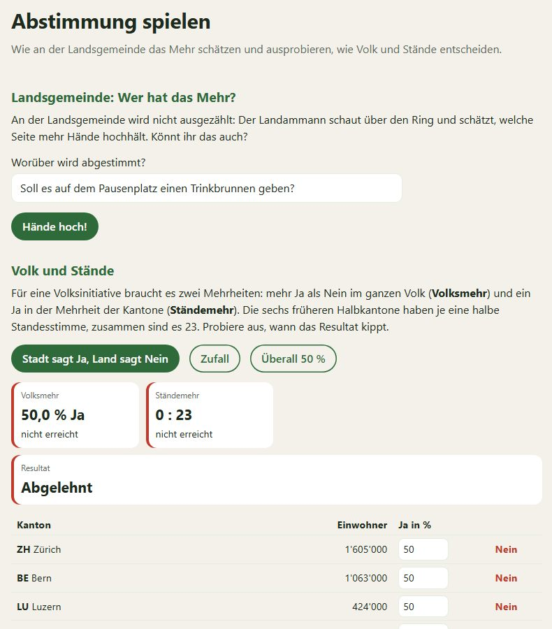
Tipp Mittelstufe: Vor dem Besuch der Landsgemeinde: Die Klasse schätzt zuerst selbst, dann stimmt sie über eine echte Klassenfrage per Handzeichen ab. Gespräch: Ist Schätzen gerecht? Was macht man, wenn es knapp ist?
Tipp Oberstufe: Mit «Volk und Stände» eine echte Abstimmung nachstellen: Wie viele kleine Kantone braucht es, um eine Mehrheit des Volkes zu überstimmen? Diskussion über Föderalismus und Minderheitenschutz.
Die Schülerinnen und Schüler können …
Lehrplan 21: NMG.10 (Gemeinschaft und Gesellschaft, Zusammenleben gestalten); überfachlich: Konfliktfähigkeit, Umgang mit Vielfalt
Die Schülerinnen und Schüler können …
Lehrplan 21: RZG.8 (Demokratie und Menschenrechte verstehen), MA.1 (Prozent, Anteile)
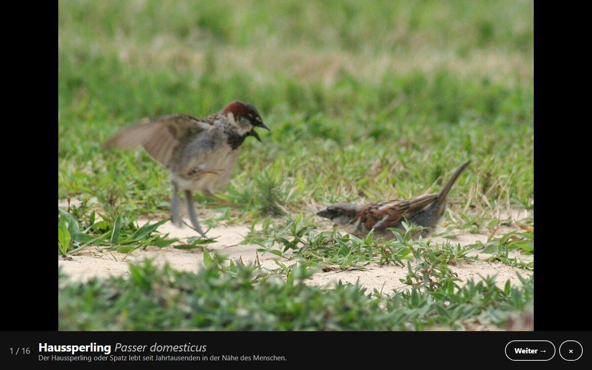
Kategorie (oder alle gemischt) und Anzahl Bilder wählen, «Quiz starten». Die Bilder eines Eintrags erscheinen bildschirmfüllend und wechseln alle 2 Sekunden, ohne Text. Leertaste oder Enter zeigt die Lösung, nochmals das nächste Bild, ← geht zurück, Esc beendet. Ein Präsentations-Klicker funktioniert auch.
Tipp Mittelstufe: Als Einstieg in die Lektion oder als Abschluss am Freitag. Die Kinder flüstern die Lösung der Banknachbarin zu oder schreiben sie auf eine Wandtafel; nach der Lösung zählt jedes Kind seine Punkte selbst.
Tipp Oberstufe: Als kurze, nicht benotete Lernkontrolle: Die Lernenden notieren 10 Namen auf einem Zettel, danach Auflösung und Selbstkorrektur. Mit «alle gemischt» lässt sich das ganze Semester repetieren.
Die Schülerinnen und Schüler können …
Lehrplan 21: NMG.2NT.9; überfachlich: Selbstreflexion
Kategorie und Art wählen, bei Bedarf einzelne Einträge abwählen, «PDF erstellen». Im Druckfenster «Als PDF speichern» wählen oder direkt drucken. Im Kanton enthält der Druck nur die Einträge des Kantons.
| Art | Inhalt | Einsatz |
|---|---|---|
| Übersicht | 8 Steckbriefe pro A4-Seite mit Hauptbild, Beschreibung und Steckbrief | Lernblatt, Postenlauf, Bestimmungshilfe auf der Exkursion |
| Arbeitsblatt | Bilder mit Nummer und Linie zum Ausfüllen, am Schluss das Lösungsblatt | Lernkontrolle, Hausaufgabe, Stellvertretung |
| Memory | Bild- und Namenskarten zum Ausschneiden | Spiel in der Gruppe, Werkstatt, ohne Geräte |
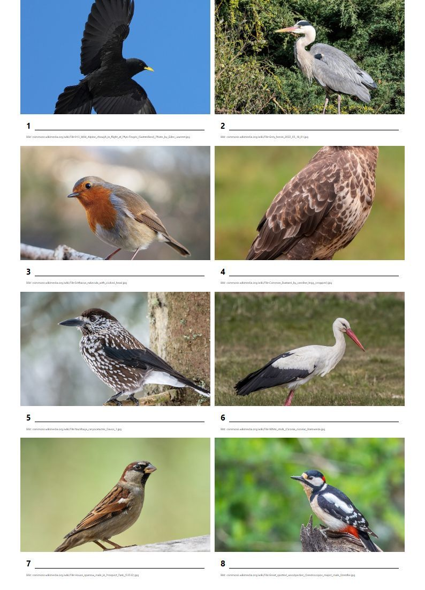
QR-Codes für Posten: In der Verwaltung lassen sich zu jedem Eintrag und für eine ganze Kategorie QR-Codes drucken. Aufgehängt im Schulhaus oder am Waldrand führen sie direkt zur Karte. So entsteht ein Postenlauf oder Lehrpfad. Lernende können die Posten selbst planen und beschriften.
Die Schülerinnen und Schüler können …
Lehrplan 21: NMG.2 (Lebensräume erkunden und dokumentieren)NT.9 (Ökosysteme erkunden)
Menü → Abzeichen zeigt, was jemand geschafft hat, in Bronze, Silber und Gold: richtige Begriffe in der LernApp, gelöste Aufträge, gespielte Spiele, Tage in Folge, angesehene Karten (Entdecker), besuchte Kantone (Unterwegs), geschaffte Themenpfade (Pfadfinder) und pro Kanton «Glarus-Kenner» usw. Es gibt keine Rangliste und keinen Vergleich mit anderen.
Tipp: Abzeichen eignen sich für ein Lerngespräch: «Zeig mir, was du diese Woche geschafft hast. Welches Abzeichen willst du als nächstes?»
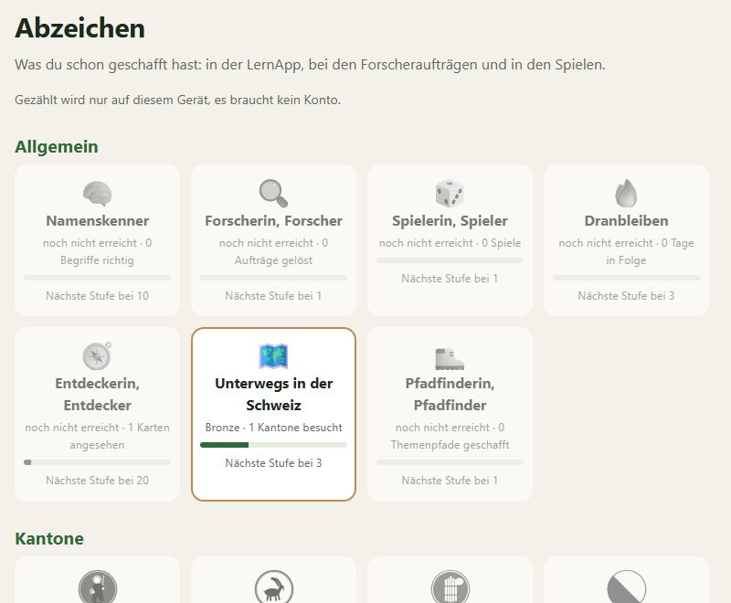
Lernziel: Die Schülerinnen und Schüler können ihren Lernfortschritt beschreiben und sich ein nächstes Ziel setzen (überfachlich: Selbstreflexion, Selbstständigkeit).
Unter jedem Bild steht «Melden», unten auf der Textseite «Fehler im Text melden». Die Meldung geht an die Verwaltung, ohne Namen. Nach einer Textmeldung erhält man eine Nummer. Wer einen echten Fehler findet, zeigt der Lehrperson die Nummer; so lässt sich ein kleiner Preis vergeben, ohne dass Namen gespeichert werden.
Tipp Mittelstufe: «Fehlerdetektive»: Wer einen Fehler findet und mit einem Buch oder einer anderen Quelle belegen kann, bekommt einen Stempel.
Tipp Oberstufe: Quellenkritik üben: Die Lernenden prüfen fünf Steckbriefe mit zwei unabhängigen Quellen (Bestimmungsbuch, Fachseite) und melden Abweichungen mit Beleg.
Lernziel: Die Schülerinnen und Schüler können Informationen mit einer zweiten Quelle überprüfen und einen Fehler sachlich beschreiben. Lehrplan 21: MI.1 (Medien und Medienbeiträge prüfen; auf Stufe Zyklus 2 einfach).
| Woche | Im Unterricht | Mit der App |
|---|---|---|
| 1 | Einstieg: Was lebt bei uns? Kanton Glarus wählen, frei erkunden; jedes Kind wählt ein «Lieblingstier» | Quiz am Beamer, Karten, Einfach lesen |
| 2 | Säugetiere und Vögel: Steckbriefe lesen, Stimmen anhören, Verwechslungen (Reh oder Rothirsch?) | LernApp «Leicht», Memory |
| 3 | Bäume und Blumen: Waldgang mit gedruckten Steckbriefen, Blätter sammeln, Giftpflanzen besprechen | Druck «Übersicht», Jahreskalender |
| 4 | Abschluss: Kinder stellen ihr Lieblingstier vor, Arbeitsblatt als Lernkontrolle | Arbeitsblatt, Steckbrief-Detektiv, Abzeichen |
Lernziele der Sequenz: Die Schülerinnen und Schüler können 20 typische Tiere und Pflanzen des Glarnerlands erkennen, zu einem Tier einen kurzen Vortrag mit Steckbrief halten und drei Giftpflanzen sicher benennen. (NMG.2, NMG.8, D.3 Sprechen)
| Woche | Im Unterricht | Mit der App |
|---|---|---|
| 1 | Einstieg: Hypothesen zum Klimawandel in der Schweiz sammeln; Themenpfad gehen und Fragen beantworten | Themenpfad Klimawandel, Forscheraufträge |
| 2 | Gletscher und Gewässer: Zahlen zum Gletscherrückgang, Wassertemperatur und Fische; Ursache-Wirkungs-Ketten | Naturwunder, Fische, Wetterphänomene, Rechenaufträge |
| 3 | Wald unter Druck: Trockenheit, Fichte und Buchdrucker, neue Schädlinge; Exkursion in den Wald | Bäume, Schädlinge, Druck «Übersicht», Duell |
| 4 | Massnahmen beurteilen, Präsentation der Gruppen, Lernkontrolle | Forscherfragen mit Musterlösung, Quiz, Arbeitsblatt |
Lernziele der Sequenz: Die Schülerinnen und Schüler können Folgen des Klimawandels in der Schweiz mit Beispielen und Zahlen belegen, Ursache-Wirkungs-Ketten darstellen und Massnahmen begründet beurteilen. (NT.9, RZG.1, RZG.3, BNE)
| Für wen | Was hilft |
|---|---|
| Schwächere Lesende, Deutsch als Zweitsprache | Einfach lesen, Vorlesen, LernApp «Leicht», Quiz mit Bildern ohne Text |
| Schnelle und interessierte Lernende | Mehr Kategorien pro Lernsession, Steckbrief-Detektiv, Forscherfragen, Kantone vergleichen, eigene Aufträge schreiben |
| Ohne Geräte | Gedruckte Steckbriefe, Arbeitsblätter, Memory-Karten |
Die App ist zum Üben gedacht, nicht zum Prüfen; sie meldet keine Resultate an die Lehrperson. Für eine Beurteilung eignen sich das gedruckte Arbeitsblatt (mit Lösungsblatt), das Quiz mit Notizzettel, schriftliche Antworten auf Forscherfragen und Präsentationen. Den Lernweg zeigen die Lernenden im Gespräch über ihre Abzeichen und den Karteikasten.
Das Lernziel steht in der App oben in jeder Kategorie. Die Zuordnung zum Lehrplan 21 nennt die Kompetenzbereiche als Orientierung. Mit ★ markiert: besonders geeignet für die Mittelstufe.
| Kategorie | Lernziel: Die Lernenden können … | LP 21 |
|---|---|---|
| Bäume ★ | die wichtigsten Waldbäume der Schweiz an Wuchs, Blättern oder Nadeln, Früchten und Rinde erkennen und benennen. | NMG.2NT.9 |
| Sträucher | häufige Sträucher von Hecke und Waldrand an Blättern, Blüten und Früchten erkennen und giftige Früchte meiden. | NMG.2, NMG.1NT.9 |
| Alpenblumen ★ | Blumen über der Waldgrenze an Blüte und Blättern erkennen und wissen, welche geschützt oder giftig sind. | NMG.2NT.9 |
| Wiesenblumen ★ | Blumen der Wiesen und Weiden erkennen und die giftige Herbstzeitlose sicher von ähnlichen Pflanzen unterscheiden. | NMG.2, NMG.1NT.9 |
| Gräser | Wiesen- und Ufergräser an Blütenstand und Ährchen unterscheiden und wissen, wo sie wachsen. | NMG.2NT.9 |
| Pilze | Speise- und Giftpilze erkennen und ihre gefährlichen Doppelgänger kennen; gegessen wird nur nach der Pilzkontrolle. | NMG.2, NMG.1NT.9 |
| Säugetiere ★ | Wildtiere aus Wald und Gebirge erkennen und ähnliche Arten wie Reh und Rothirsch sicher unterscheiden. | NMG.2NT.9 |
| Hunde ★ | Schweizer und häufige Hunderassen erkennen und die vier Sennenhunde sowie die Laufhunde auseinanderhalten. | NMG.2NT.9 |
| Vögel ★ | Vögel vom Bartgeier bis zum Rotkehlchen an Gestalt, Gefieder und Lebensraum erkennen, einige auch an der Stimme. | NMG.2NT.9 |
| Reptilien | Eidechsen, Schlangen und Schildkröten erkennen und die beiden Giftschlangen Kreuzotter und Aspisviper sicher bestimmen. | NMG.2NT.9 |
| Amphibien ★ | Frösche, Kröten, Molche und Salamander erkennen und ihren Nachwuchs der richtigen Art zuordnen. | NMG.2NT.9 |
| Fische | einheimische Fische an Körperform, Flossen und Färbung erkennen und wissen, in welchen Gewässern sie leben. | NMG.2NT.9 |
| Insekten ★ | Insekten von der Honigbiene bis zum Hirschkäfer erkennen und ihre Larven zuordnen. | NMG.2NT.9 |
| Falter | Tagfalter und tagaktive Nachtfalter an Farbe und Flügelmuster erkennen und ihre Raupen zuordnen. | NMG.2NT.9 |
| Nutztiere ★ | Schweizer Rassen von Hof und Alp erkennen: Rinder, Pferde, Schafe, Ziegen, Schweine und Hühner. | NMG.2, NMG.6NT.9, WAH |
| Steine | Gesteine und Mineralien der Schweiz an Farbe, Körnung und Aufbau erkennen und wissen, wo sie vorkommen. | NMG.4RZG.1 |
| Berge ★ | bekannte Berge der Schweiz an ihrer Gestalt erkennen und auf der Landkarte finden. | NMG.8RZG.1, RZG.4 |
| Gewässer ★ | die grossen Seen und Flüsse der Schweiz erkennen und wissen, in welcher Gegend sie liegen. | NMG.8RZG.1, RZG.4 |
| Sehenswürdigkeiten ★ | berühmte Bauwerke und Orte der Schweiz erkennen und wissen, wo sie stehen und wofür sie bekannt sind. | NMG.8, NMG.9RZG.4, RZG.5 |
| Naturwunder | Wasserfälle, Schluchten, Gletscher und Felsen der Schweiz erkennen und erklären, wie sie entstanden sind. | NMG.4, NMG.8RZG.1 |
| Schädlinge | Schädlinge in Wald, Feld und Garten an Tier, Larve und Schadbild erkennen. | NMG.2NT.9, RZG.3 |
| Wetterphänomene ★ | Wetter und Himmelserscheinungen der Schweiz erkennen und in einfachen Worten erklären, wie sie entstehen. | NMG.4RZG.1 |
| Spezialitäten ★ | typische Schweizer Spezialitäten erkennen und wissen, woraus sie bestehen und aus welcher Region sie stammen. | NMG.6, NMG.8WAH, RZG.5 |
| Geschichte | wichtige Ereignisse und Personen der Schweizer Geschichte zeitlich einordnen und ihre Bedeutung erklären. | NMG.9RZG.5, RZG.6 |
| Politik | erklären, wie die Schweiz regiert wird und wie Bürgerinnen und Bürger mitbestimmen. | NMG.10RZG.8 |
Abkürzungen Lehrplan 21: NMG.1 Identität, Körper, Gesundheit · NMG.2 Tiere, Pflanzen und Lebensräume erkunden und erhalten · NMG.4 Phänomene der belebten und unbelebten Natur erforschen · NMG.6 Arbeit, Produktion und Konsum · NMG.8 Menschen nutzen Räume · NMG.9 Zeit, Dauer und Wandel · NMG.10 Gemeinschaft und Gesellschaft · D Deutsch · MA Mathematik · MI Medien und Informatik. NT.1 Wesen und Bedeutung von Naturwissenschaften · NT.9 Ökosysteme erkunden · RZG.1 Natürliche Grundlagen der Erde · RZG.2 Lebensweisen und Lebensräume · RZG.3 Mensch-Umwelt-Beziehungen · RZG.4 Sich in Räumen orientieren · RZG.5 Schweiz in Tradition und Wandel · RZG.6 Weltgeschichtliche Kontinuitäten und Umbrüche · RZG.7 Geschichtskultur · RZG.8 Demokratie und Menschenrechte · WAH Wirtschaft, Arbeit, Haushalt · MA Mathematik · MI Medien und Informatik · BNE Bildung für Nachhaltige Entwicklung.
Die Zuordnung ist eine Orientierung auf der Ebene der Kompetenzbereiche. Die genauen Kompetenzstufen finden Sie im Lehrplan 21 des Kantons Glarus.
Menü → Einstellungen zeigt die Anleitung für iPhone/iPad, Android und Computer. Danach öffnet sich die Seite in einem eigenen Fenster. Mit «Alle Bilder herunterladen» stehen alle Bilder auch ohne Internet bereit, z. B. auf der Exkursion. Tierstimmen und die Meldungen brauchen Internet.
«Kategorie teilen» oben in jeder Kategorie liefert den Link zur ganzen Kategorie, der Knopf «Teilen» (Kettensymbol) in der Grossansicht einen Link direkt zu einem Eintrag, z. B. für einen Auftrag auf der Lernplattform. Die Adresse des Kantons (je-net.ch/sff/glarus) öffnet gleich den Kanton. QR-Codes für Posten druckt die Verwaltung.
| Frage | Antwort |
|---|---|
| Der Lernstand ist weg. | Er gehört zum Gerät und Browser. Anderes Gerät, privater Modus oder gelöschte Browserdaten beginnen neu. |
| Jeden Tag erscheint ein Auftrag, das stört im Unterricht. | Unter Menü → Forscheraufträge oder Einstellungen «Jeden Tag beim Öffnen einen Auftrag zeigen» abschalten. |
| Die Seite zeigt nur wenige Einträge. | Vermutlich ist ein Kanton gewählt. Oben links auf «Ganze Schweiz» wechseln. |
| Ein Bild passt nicht oder ein Text ist falsch. | «Melden» bzw. «Fehler im Text melden» – die Verwaltung korrigiert es. |
| Die Einführung erscheint nicht mehr. | Menü → Hilfe → «Einführung nochmals zeigen». |
| Wo finde ich eine Anleitung für die Lernenden? | Menü → Hilfe: Anleitung zu jedem Thema, ausserdem «?»-Knöpfe direkt neben vielen Funktionen. |